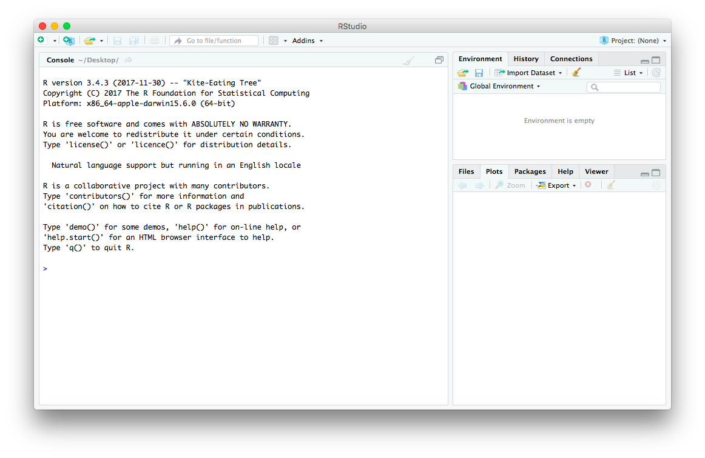
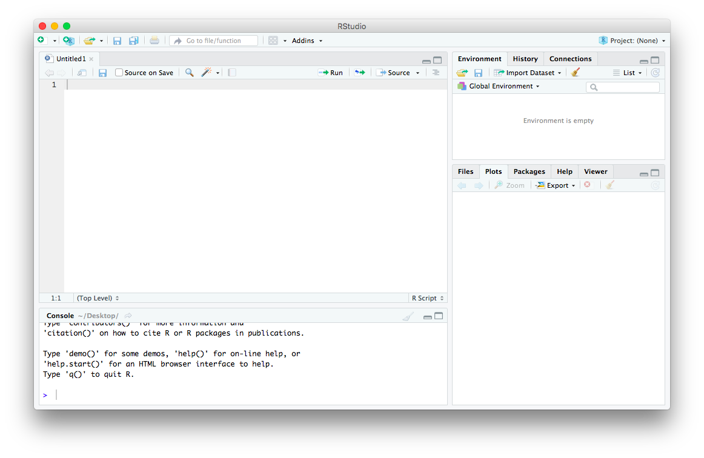

Getting started with R and R Studio
This is Part 1 of a series on sociophonetic data analysis.
What is R?
At its core, R is an open source programming language for statistical computing. Let’s break this statement down a little bit.
It’s open source. This means that everything about it is free and open to the public. Open source software is in response to proprietary software which are owned by some entity, usually cost money, and have things like their source code hidden from the public. I won’t get into the politics between these two, but one positive aspect of open source stuff is that other people can contribute to it. R is an excellent example of a community-driven effort to make something better: there are thousands of user-submitted add-ons, called “packages” or “libraries” that you can download to enhance your R code. We’ll get to that later.
Second, R is a programming language. I won’t get into the technicalities of what that means. For our purposes, it’s sufficient to just know that R is akin to other languages like Python, C#, C++, Java, PHP, Perl, Swift, Ruby, etc. In fact, it’s among the most used programming languages in the world (its exact rank depends on who you ask). So if you’ve never coded before, there are some new concepts to learn, but if you have, there’s a lot of cross-over information that’ll come naturally.
Finally, R is for statistical computing. Each programming language has its strengths and weaknesses and no programming language does everything equally well. R’s strength is working with data and running statistical analyses. This means isn’t not as good as working with text as Perl and not as good as making stand-alone software as Java or C#. But when it comes to data analysis, R is a workhorse, and will get the job done.
Basically, with R you’ll be able to analyze your datasets more efficiently than many other alternatives, and with the help of user-submitted libraries, you’ll be able to do some pretty neat stuff with it.
What are some alternatives to R?
Say you don’t like R. Maybe you don’t want to bother trudging through another programming language or you had an ex who’s name starts with R. Luckily for you, there’s some alternative software you can use instead.
SPSS is a common alternative in the humanities. Unfortunately it only runs on Windows, so sorry, Mac users. Also, it’s proprietary software.
SAS might be the way to you if you’re in the sciences. Again though, proprietary software.
If you’re in economics or epidemiology, you might be more at home using Stata. You guessed it though, it’s proprietary software.
Maybe you come from a mathematics or engineering background and want to stick with MATLAB. Well, it too is proprietary software.
If you don’t even want to bother with coding, you might like JMP. The downside is… do I even have to say it anymore?
Those of you with a keen sense of discernment might notice that all these alternatives have something in common. The fact that they’re proprietary software means that it costs money to use them. I’ve got nothing against proprietary software: I’m just cheap. Most students can get access to some or all of these through their university’s license, so by all means, go ahead and use these others (they are all very good). But as soon as you graduate, you’ll need to fork over a ton of money to use them or hope you have a licence wherever you go.
R is free. You download it to your computer and it’s there forever. No need to renew site licenses. No need to put in credentials. No annoying “Upgrade to premium to access these features!” messages. It’s free and yours forever. Above all else, this is my favorite part of R.
(I will say though, Python is also very good. It’s also free and has tons of user-submitted packages. I just haven’t had the opportunity to learn it yet.)
R vs. RStudio
If you’re just getting started with R, you may have heard of something RStudio and you might be wondering what it is.
R is the programming language. It comes standard on many computers (you can download it here if you don’t have it). You can run R commands through it and it works fine. However, it’s hard to work with for several reasons. You have no way of keeping track of your script, so if you stop working in the middle of something, when you start up again you’ll need to type all those commands over again. It’s also hard to keep track of your objects or variables that you’ve created in a particular session. It’s harder to access help and see visuals as well. It’s a little difficult to appreciate what these downsides are without being familiar with R and RStudio, but you can take my word for it. Again, it works fine, it’s just a little difficult. (For what it’s worth, I’ve noticed that hard-core statisticians often work with R outside of RStudio.
RStudio is a good solution to these problems. It’s another open source piece of software that acts as a shell around R. At its core, all it does is run the R language. But it makes it a lot easier for you. You can create R scripts so you don’t have to type every command every time. It keeps track of your history and what variables you have currently. It also makes it a lot easier to access help, see visuals, and lots of other stuff.
In 2022, the company RStudio changed its name Posit. The RStudio software still exists but now there’s a new one called Quarto that is more friendly to Python users. You can still use RStudio just fine, but you might see the names Posit and Quarto thrown around on the website too.
On top of that, RStudio has a lot of other pretty neat things that, as far as I know, don’t work in base R. For example, you can create HTML documents (like the one you’re reading right now) directly in RStudio! You can make PDFs and Word files too, with R code, output, and graphics built-in. This is called R Markdown. You can also make interactive webpages using Shiny, which allow users to interact with your data.
The team that works at RStudio is actively involved in making really handy libraries. For example, Hadley Wickham, RStudio’s Chief Scientist, is the author of packages like dplyr, ggplot2, and tidyr, which are among the language’s most downloaded libraries. Later in this series, cover some of these packages.
Installing R and RStudio
Let’s get down to business. To download R, go to https://cran.r-project.org/mirrors.html. This will take you to a list of CRAN mirrors. All the sites on this list are identical, they’re just hosted on various servers across the world to handle the traffic, which is why they’re called “mirrors.” Just pick one near your current location—such as the one at the University of Utah—and click on it. From there, download the package appropriate for your computer.
Mac users will be taken to a screen where they’ll give you various versions to choose from. At the time of writing, the latest package is 4.4.2, so go ahead and download that one and install it like any other piece of software. Windows users will have a link that says “install R for the first time” which will take them to the download page. You can then install R like normal.
To download RStudio, go to https://posit.co/download/rstudio-desktop/ and click “Download” under RStudio Desktop. There are several fancy versions of RStudio but we only need the free Desktop one, which is the one furthest to the left. Click the download button and then click on the link appropriate for your operating system.
That’s it. Pretty straightforward for both of these. Once you have both of them installed, you’ll only ever need to run RStudio from here on out.
Hello, World!
The first program you’ll write in virtually any programming language is “Hello, World!”. This is partly because it makes sure the programming language is running properly. But it’s also easy and serves as a very basic intro to displaying text in a language. The only scripting we’ll do today is to create this first program.
When you open RStudio for the first time, you’ll see that the window is divided into three main parts.

On the top right, you’ll find the Environment, History, and Connections tabs. I almost always leave this at the Environment tab, which will display the variables and other objects I’ve created in my code. The bottom-right you’ll see the Files, Plots, Packages, Help, and Viewer tabs. I jump around here between the Plots and Help primarily, the former to show any plots, charts, and other visualizations and the latter to look at the extensive help files that come with R.
On the left is the Console. This is essentially where base R is in RStudio. The last line should be a > symbol, which is where you type your commands. This is also where R displays output like summary tables, warning messages, and other things you might need to see.
We’re actually going to add a fourth window by creating a new script. In the top left of RStudio, you’ll see a icon with a green plus sign. Click that and open a new R Markdown file (it’s about the fifth one down). The Console moves down to the bottom-left, and now your script is on the top-right.

This is where the bulk of your work takes place. It’s here that you actually do all the typing. This script is actually a text file that you can save to your computer (with the appendix .R instead of .txt), so you can open it up pick up where you left off.
They way you execute functions in RStudio is to put your curser on a line in your script and hit command/control + enter. You can also click the Run button at the top right of the script, but in my opinion that takes too long. You don’t need to highlight the entire line and you don’t need to put the curser at the start or the end, as long as its on the line.
In the next tutorial, we’ll start working with the R programming language itself.
You may also be interested in a PDF of the slides I used when I first taught this material as an in-person workshop. An older version that includes additional content can be found here as a PDF or an html file.
This page is largely the same as the first part of this tutorial from 2017. The only changes are some slight edits here and there and updates to reflect software changes in the past seven years.